My HW Git
- Set up Git (and configure) on your local machine.
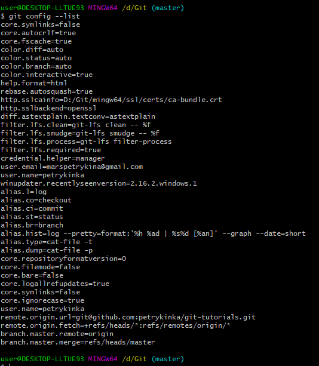
- Github profile review.
https://github.com/petrykinka
Плюси профілю:
- реальне фото;
- короткий опис;
- електронна адреса;
- посилання на Фейсбук;
- місто, країна;
- організація.
Мінуси профілю:
- мала кількість репозиторіїв;
- мало комітів;
- потрібно ставити зірочки;
- необхідно LinkedIn додати;
- фоловити людей.
- якісно описувати репо.
- Create and configure first repository from console. Push few files.
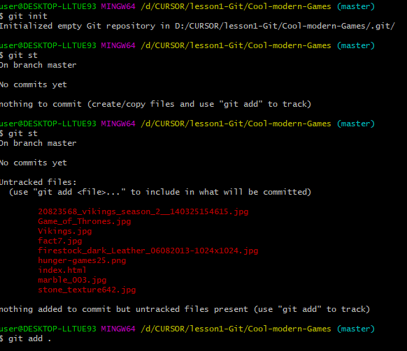
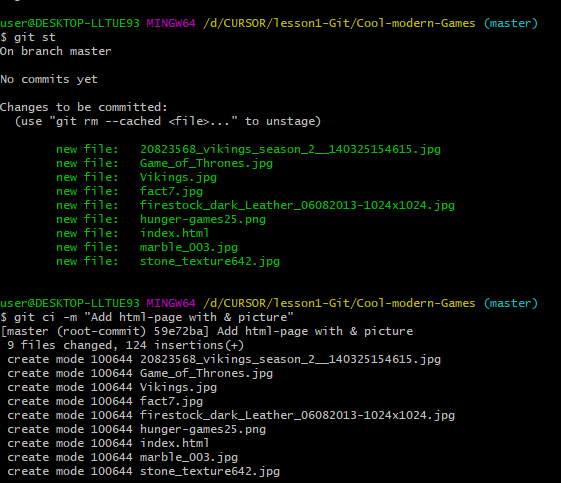
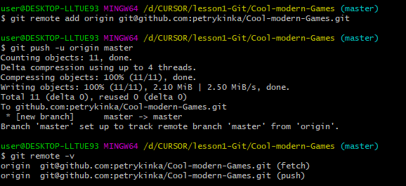
- Create and configure first repository from Github. Push few files.
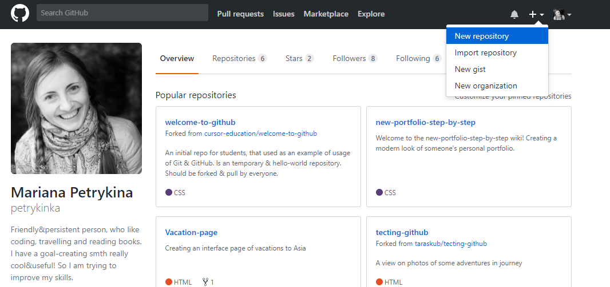
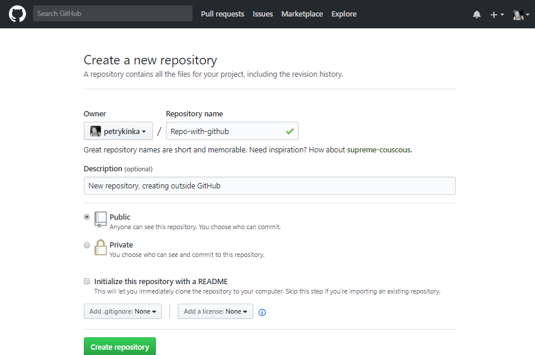
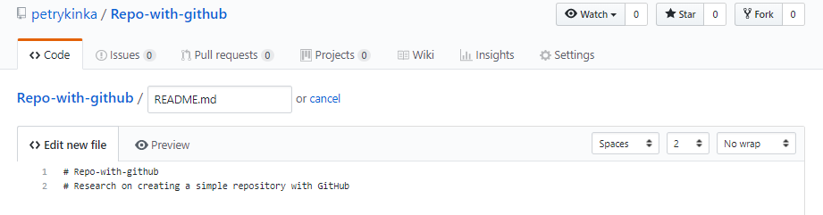
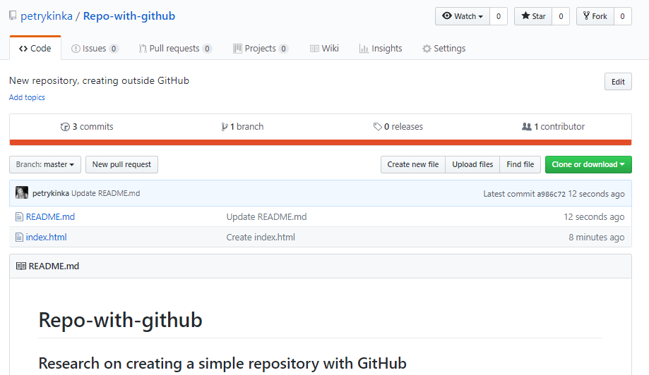
- Make Fork and PR of repository from anyone else from group.
https://github.com/taraskub/tecting-github/pull/1
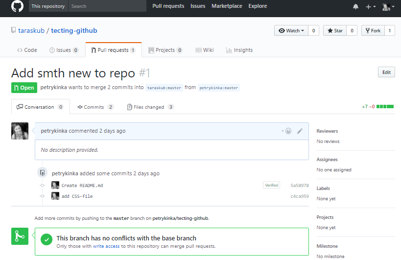
- Create Github Pages from any of your repository (or create new repository).
https://petrykinka.github.io/Vacation-page/
- Play https://try.github.io/.
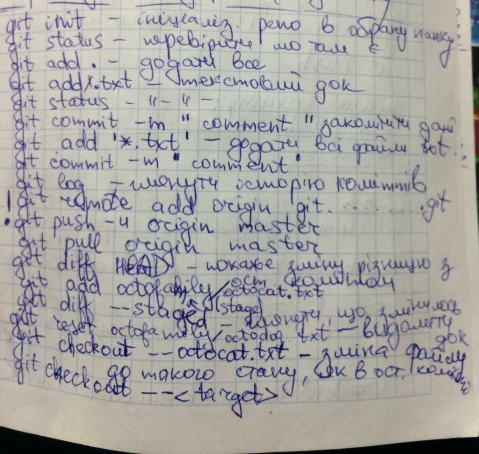
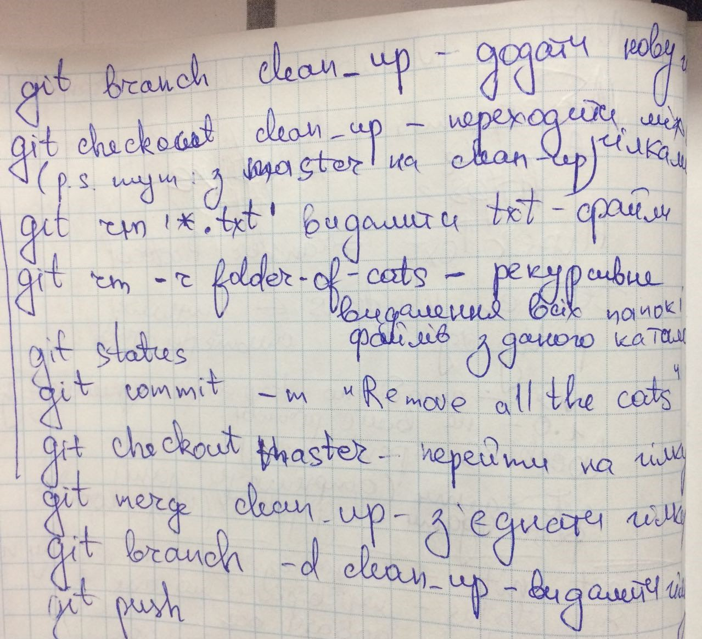
- Fork, push changes for Fork, and Create PR for github.com/cursor-education/welcome-to-github.
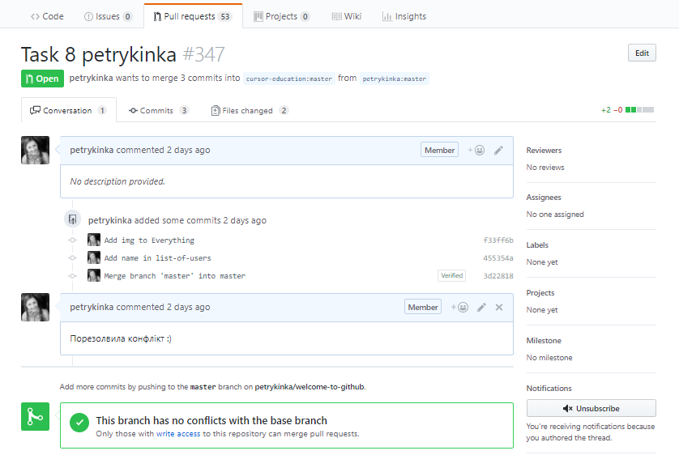